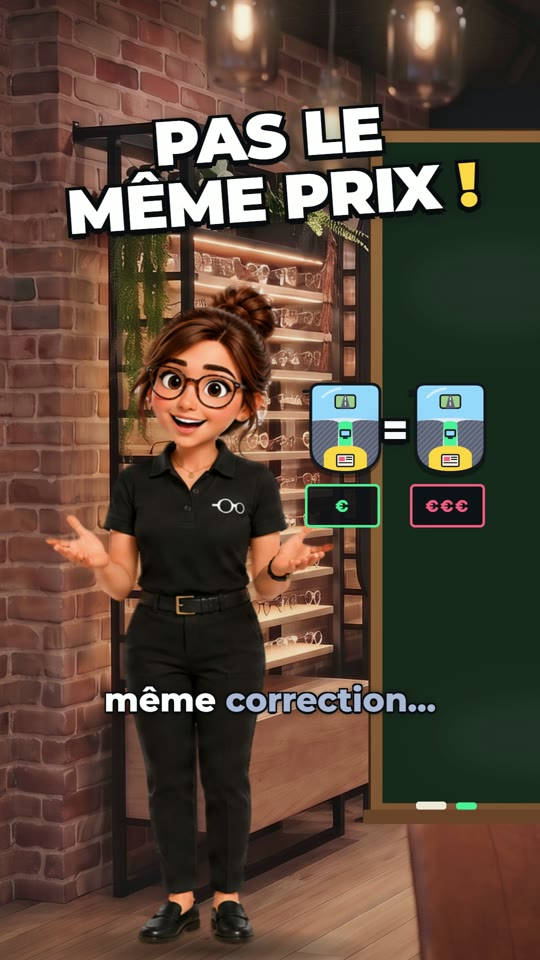
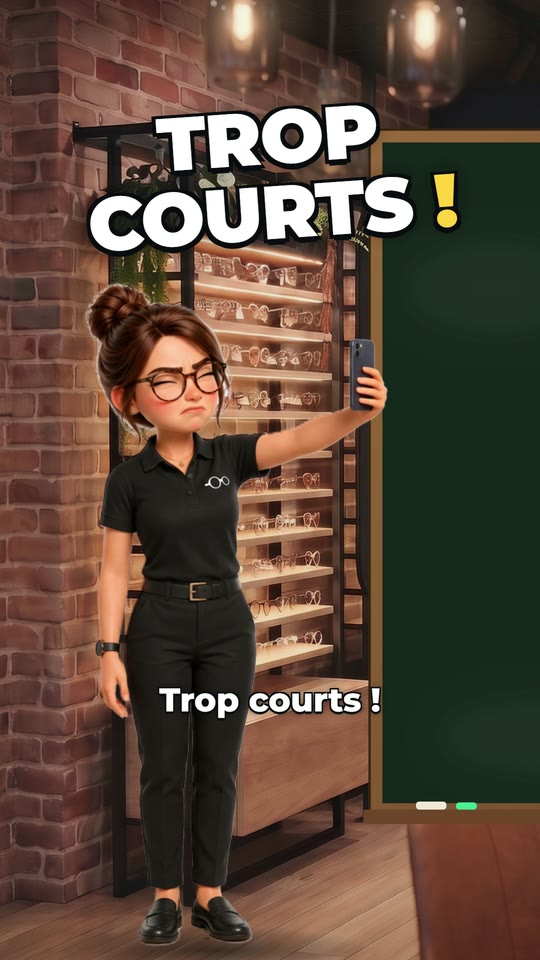
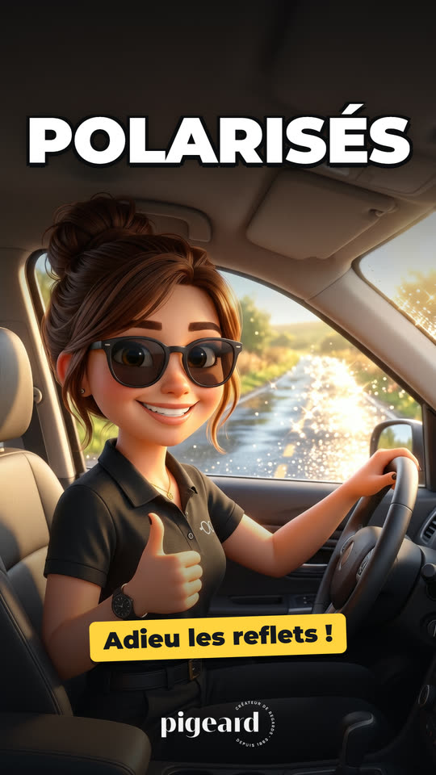
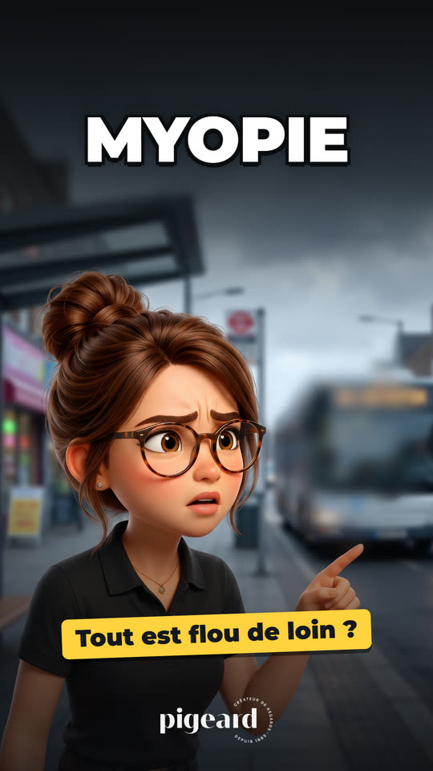

La vue et les lunettes expliquées en vidéo courte, avec le sourire. Cherchez un sujet : Iris a sûrement la réponse.





Net de près, flou de loin : chez le myope, l'image se forme juste devant la rétine. Un verre concave la remet pile dessus.
Aucune vidéo sur « »… pour l'instant !
posez-nous la question en magasin, Iris prend notePour la lire ici, votre navigateur se connecte à YouTube (Google), qui peut alors déposer et lire des traceurs sur votre appareil pour ses propres usages : fonctionnement, sécurité, analyse, publicité et personnalisation. Nous utilisons le mode « confidentialité avancée » de YouTube : les publicités du lecteur n'y sont pas personnalisées.
Rien n'est chargé depuis YouTube avant votre accord. Si vous refusez, vous pouvez la regarder directement sur YouTube. Votre accord vaut jusqu'à la fermeture de l'onglet, et vous pouvez le retirer à tout moment sous le lecteur. Traceurs de Google · règles de confidentialité de Google · nos mentions légales.
Lecture via YouTube (Google) ·